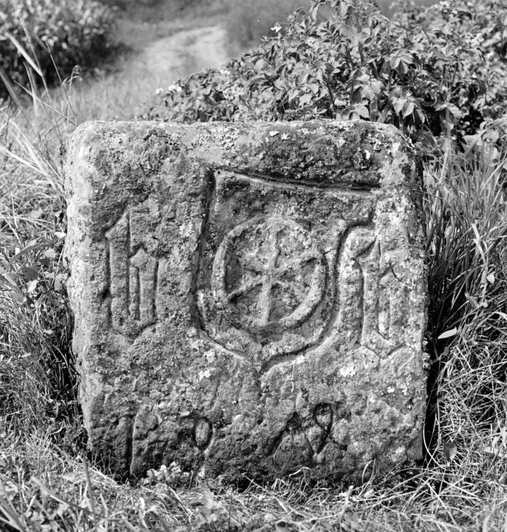

Begriffe
Wer alte Grenzbeschreibungen liest, stößt auf Wörter und Zeichen, die heute kaum noch geläufig sind. Hier sind die wichtigsten kurz erklärt, jeweils mit einem Hinweis, wo sie auf dieser Website vorkommen.

- Gemarkung
- Das Gebiet, das zu einer Gemeinde gehört, mit allen Feldern, Wiesen und Wäldern. Die Gemarkungsgrenze trennt es vom Gebiet der Nachbargemeinden. Die heutige Gemarkung Tauberbischofsheim ist rund 30 Kilometer lang umgrenzt.
- Grenzgang, Grenzbegehung
- Die regelmäßige Begehung der Gemarkungsgrenze. Dabei wurde geprüft, ob alle Steine noch vorhanden und unbeschädigt waren; fehlende Steine wurden ersetzt. Das Ergebnis hielt ein Protokoll fest. Die erhaltenen Protokolle sind die wichtigste Quelle dieser Website, siehe Die Grenzgänge.
- Grenzberichtigung
- Eine amtliche Änderung des Grenzverlaufs in einem Abschnitt, etwa um eine Grenze an einen Weg oder Bach anzupassen. Für Tauberbischofsheim sind Grenzberichtigungen aus den Jahren 1887 bis 1893 überliefert.
- Dreimärker
- Ein Grenzstein an einem Punkt, an dem drei Gemarkungen zusammentreffen. Er trägt meist die Zeichen aller drei Orte. An der Tauberbischofsheimer Grenze sind 14 Dreimärker bekannt; in der Suche lassen sie sich gesondert anzeigen.
- Rute
- Ein altes Längenmaß. Die Protokolle ab 1608 geben die Abstände zwischen den Steinen in Ruten an. Bis 1749 gilt die fränkische Werkrute zu 3,65 Metern, 1872 und 1887–1893 die neue badische Rute zu 3,00 Metern. Umgerechnet in Meter stehen beide Angaben im Steckbrief jedes Steins. [zu prüfen: Beleg für 3,65 m nennen]
- Mainzer Rad
- Das Wappen des Erzbistums und Kurfürstentums Mainz: ein silbernes Rad mit sechs Speichen auf rotem Grund. Tauberbischofsheim gehörte bis 1803 zu Kurmainz. Das Rad auf der Bischofsheimer Seite eines Steins zeigt die Landesherrschaft an. Es ist das häufigste Zeichen an dieser Grenze.
- Wappen, Wappenschild
- Ein eingehauener Schild, oft mit dem Mainzer Rad darin. Die Protokolle unterscheiden, ob ein Stein einen Schild trägt oder nur das Rad.
- „b“ für Bischofsheim
- Ein eingehauener Buchstabe b als Zeichen der Stadt. Manche Steine tragen ihn einmal, viele dreimal. Die Protokolle geben die Zahl der „b“ an; die Suche findet alle Steine mit mindestens einem „b“. [zu klären: Warum drei „b“? Was bedeuten die Angaben „GB“ und „G.B.“ in dieser Spalte?]
- Kreuz auf der Oberseite
- Eine eingehauene Kerbe oder ein Kreuz auf dem Kopf des Steins. Solche Zeichen zeigen die Richtung an, in der die Grenze weiterläuft, oder markieren den genauen Grenzpunkt. [zu prüfen: Welche Deutung trifft hier zu?]
- Rückseite
- Die Seite des Steins, die zur Nachbargemarkung zeigt. Dort steht meist das Zeichen des Nachbarorts, oft ein Anfangsbuchstabe. Die Protokolle geben es in der Spalte „Rückseite“ wieder.
- Jahreszahl
- Viele Steine tragen das Jahr, in dem sie gesetzt wurden. Nennt ein altes Protokoll einen Stein, der heute eine jüngere Jahreszahl trägt, dann wurde an derselben Stelle später ein neuer Stein gesetzt. Der Steckbrief zeigt deshalb „erstmals erwähnt“ und „frühestes mögliches Setzjahr des heutigen Steins“ getrennt an.
- Größe und Farbe
- Die Protokolle unterscheiden große und kleine, hohe und alte Steine sowie rote und weiße. Die Farbe verrät den Stein: roter Buntsandstein oder heller Kalkstein. [zu prüfen]
- Steinnummern
- Jeder Grenzgang hat die Steine neu durchgezählt, und 2021 kam eine eigene Zählung hinzu. Diese Website gibt jeder Steinposition eine feste laufende Nummer entlang der Grenze (Stein 1 bis 394). Die Nummern aus den einzelnen Protokollen stehen im Steckbrief.
- Sicherheitsklassen A bis D
- Auf der Karte ist jeder Standort mit einer Klasse versehen: A – der Stein steht 2021 per GPS eingemessen an seinem ursprünglichen Platz; B – der Standort ist aus den Abstandsangaben plausibel berechnet; C – die Abstandsangaben widersprechen sich oder reichen nur von einer Seite; D – der Standort lässt sich nur auf einen Grenzabschnitt eingrenzen. Wie die Berechnung funktioniert, steht unter Quellen und Methode.